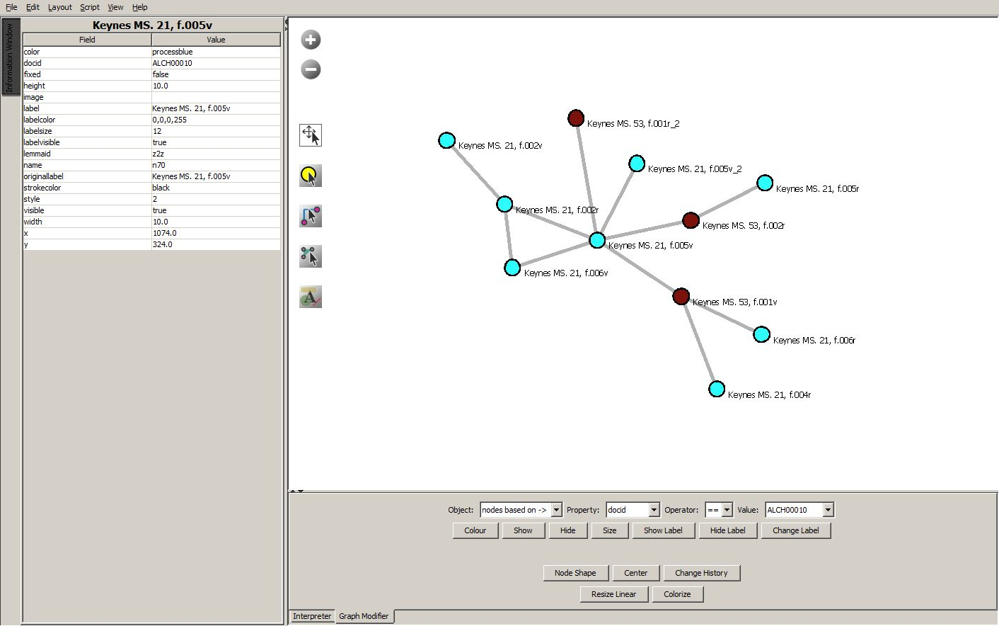

Graph for NWB
This output format is designed to create network graphs for use in the Network Workbench (NWB) application, which can be downloaded by following the link on the results page.

LSA searches can produce hundreds of results. A natural and intuitive way to work with large LSA result sets is to put them into network graphs to visualize connections and clusters.
This option is available for Document-document, Chunk-chunk, and Term-term searches.
NWB allows you to use the mouse to explore the graph and its Pyhon programming interface allows you to modify colors, sizes, and shapes according to defined properties in the graph files.
See NWB documentation for help with its tools.
This example shows part of the network of related passages for Keynes MS. 21, "The Method of the Work."
